Cooling
70 parts Out of stock
Out of stock180 Degree Race Thermostat for 1992-2002 Dodge Viper - P4876900
$111.00
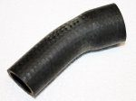
1992 - 1996 Dodge Thermostat to Engine By-Pass Hose - 05245810
$75.00
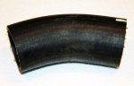
1992 - 1996 Dodge Thermostat to Engine Tube Hose - 5245811
Part # 5245811
$100.00

1992 - 1996 Dodge Viper By-Pass Tube to Water Pump Hose - 05245812
Part # 5245812
$99.00

1992 - 1996 Dodge Viper Coolant Temperature Sensor - 05226374
Part # 05226374
$75.00

1992 - 1996 Dodge Viper Cooling Tank Pressure Cap - 52079880AA
Part # 52079880AA
$17.00
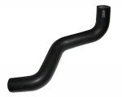
1992 - 1996 Dodge Viper Radiator to Water Pump Hose - 04709200
$95.00
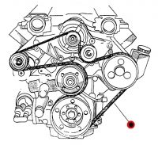
1992 - 1996 Dodge Viper RT/10 A/C Drive Belt - Q4070775
Part # Q4070775
$80.00
 Out of stock
Out of stock1992 - 1996 Dodge Viper RT/10 Thermostat Gasket -05245231
Part # 5245231
$16.00
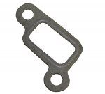
1992 - 1996 Dodge Viper RT/10 Water Passage Gasket - 05245643
$29.00
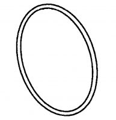
Out of stock1992 - 1996 Dodge Viper RT/10 Water Pump to Front Cover O-Ring - 05245473
Part # 05245473
$4.00
 Out of stock
Out of stock1992 - 1996 Dodge Viper RT/10 WITHOUT A/C Drive Belt - 05245316
Part # 05245316
$45.00
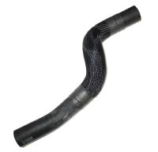
1992 - 1996 Dodge Viper Tube to Radiator Hose - 04642036
Part # 4642036
$85.00
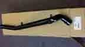
1992 - 1996 Dodge Viper Water By-pass Coolant Tube 05245201
Part # 05245201
$250.00
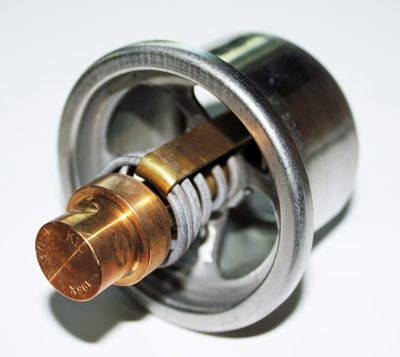
Out of stock1992 - 2002 Dodge Viper 195 Degree Thermostat - 53041078AC
Part # 053041078AC
$150.00
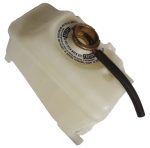
1992 - 2002 Dodge Viper Coolant Pressure Tank - 04709389
Part # 4709389
$109.00
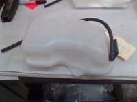
1992 - 2002 Dodge Viper Coolant Reserve Tank - 52027784
Part # 52027784
$50.00

1992 - 2002 Dodge Viper Oil Cooler - 04643826AC
$495.00
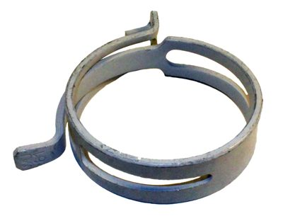
1992 - 2010 Dodge Viper Radiator Hose Clamp -52006750 55111033AA
$3.00
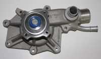
Out of stock1994 - 1996 Dodge Viper RT/10 Water Pump - 05245465
Part # 05245465AB
$349.99
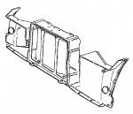
Out of stock1994 - 2002 Dodge Viper Fan Shroud and Radiator Closure Support - 04709352AC
Part # 4709352AC
$1,699.00
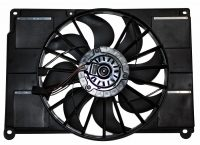
Out of stock1994 - 2002 Dodge Viper Radiator Fan Module - 04854720AA
Part # 4854720AA
$1,095.00
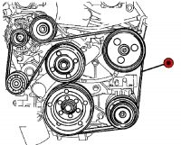
1996 - 2002 Dodge Viper A/C Drive Belt - 04763795AD
Part # 4763795AD
$87.90

1996 - 2002 Dodge Viper Accessory Drive Belt (non-AC) - 04763863AC
Part # 4763863AC
$75.00

1996 - 2002 Dodge Viper Coolant Tank to Water Pump Hose - 04763877
Part # 4763877
$199.99
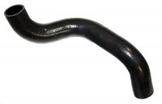
1996 - 2002 Dodge Viper Outlet to Water Pump (Lower) Hose - 04763584
Part # 4763584
$105.00

1996 - 2002 Dodge Viper Temperature Sending Unit - 04848110
$75.00

1996 - 2002 Dodge Viper Thermostat Gasket - 04763839AC
Part # 04763839AC
$22.00
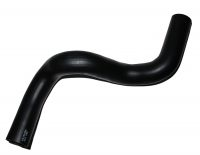
1996 - 2002 Dodge Viper Thermostat to Inlet (Upper) Hose - 04763585
Part # 4763585
$79.00

1997 - 2002 Dodge Viper U-Nut .25-20 - 06029074
Part # 06029074
$3.50
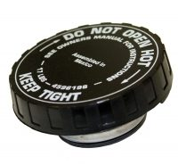
1997 - 2006 Dodge Viper Pressurized Radiator Cap - 04596198
Part # 04596198
$33.60
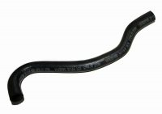
Out of stock1999 - 2002 Dodge Viper Engine to Water Valve Hose - 04763974AC
Part # 04763974AC
$39.00
 Out of stock
Out of stock2003 - 2006 Dodge Viper Accessory A/C Drive Belt - 05037206AD
Part # 05037206AD
$52.00

2003 - 2006 Dodge Viper SRT10 Pressurized Coolant Bottle - 05043002AB
$150.00

2003 - 2006 Dodge Viper SRT10 Upper Radiator Hose - 05264985AA
Part # 05264985AA
$53.00
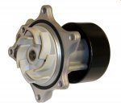
2003 - 2006 Dodge Viper SRT10 Water Pump - 05037164AE
Part # 5037164AE
$1,650.00
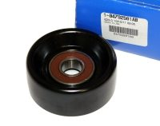
Out of stock2003 - 2010 Dodge Viper SRT10 Idler Pulley - 04792581AB
Part # 04792581AB
$35.00
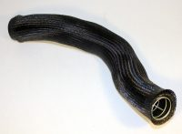
2003 - 2010 Dodge Viper SRT10 Lower Radiator Hose - 05264986AF
Part # 05264986AB
$170.00

2003 - 2010 Dodge Viper SRT10 Radiator Air Baffle - 5290668AC
Part # 5290668AC
$185.00
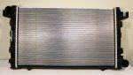
Out of stock2003 - 2010 Dodge Viper SRT10 Radiator Assembly - 5264994AC
Part # 5264994AC
$800.00
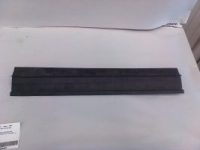
2003 - 2010 Dodge Viper SRT10 Upper Radiator Seal - 05290670AB
Part # 05290670AB
$51.00
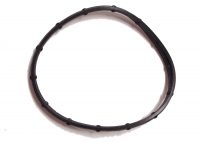
2003 - 2010 Dodge Viper Water Pump Gasket - 05037171AB
Part # 5037171AB
$14.00
 Out of stock
Out of stock2003 - 2013 Dodge Viper SRT10 Oil Cooler - 05290014AE
Part # 05290014AE
$260.00

2003 - 2013 Dodge Viper Thermostat Housing - 05037174AD
Part # 05037174AD
$345.00

2003 - 2014 Dodge Viper Thermostat Housing Gasket 05037173AA
Part # 05037173AA
$23.00
2003 - 2017 Dodge Viper 185 Degree Thermostat - 05037344AA
$349.00

2003 - 2017 Dodge Viper SRT10 Power Steering Cooler - 05290013AE
Part # 5290013AE
$255.00
 Out of stock
Out of stock2008 - 2010 Dodge Viper Accessory A/C Drive Belt - 05037862AD
Part # 05037862AD
$34.00
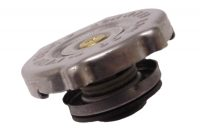
2008 - 2010 Dodge Viper Cooling Tank Pressure Cap - 05183710AA
Part # 5183710AA
$15.00
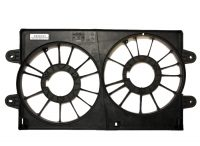
Out of stock2008 - 2010 Dodge Viper Fan Housing Shroud - 68029032AAJB
Part # 68029032AA
$295.99

2008 - 2010 Dodge Viper SRT10 Heater Return Hose - 05030628AD
Part # 5030628AD
$135.00
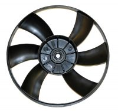
2008 - 2010 Dodge Viper SRT10 Radiator Fan - 68034687AA
Part # 68034687AA
$33.00

2008 - 2010 Dodge Viper SRT10 Upper Radiator Hose - 05030603AB
Part # 5030603AB
$25.00
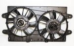
2008 - 2017 Dodge Viper SRT10 Radiator Fan Assembly - 68029032AA 5170746AA 5137714AA
Part # 68029032AA 5170746AA 5137714AA
$950.00
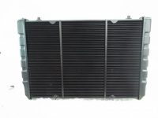
Out of stock94-02 VIPER RADIATOR 04855123AB DODGE
Part # 04855123AB
$725.00
 Out of stock
Out of stock97-02 PROWLER OVERFLOW BOTTLE 4815217AD PRESURIZED COOLANT TANK
Part # 4815217AD
$199.99
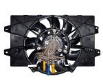
G5 Used Radiator Fan Module $1995 from JonB@Partsrack.com
$899.99

1992 - 1996 Dodge Viper Temperature Sending Unit - 56027012
Part # 56027012
$45.00
1992-2002 Dodge Viper Heater Water Control Valve 4642554
Part # 4642554
$59.99
1996 - 2002 Dodge Viper Radiator Shroud Flap
$29.00
Out of stock1996 - 2002 Dodge Viper Water Pump - 04763776AC
Part # 4763776AC
$1,250.00
Out of stock1996 - 2002 Dodge Viper Water Pump Gasket - 04763790AB
Part # 04763790AB
$29.95
2003 - 2010 Dodge Viper Power Steering To Cooler Line - 05290267AC
$70.00
2008 - 2010 Dodge SRT Viper Oil Cooler Inlet Line - 05030631AB 68349467AA
$170.00
2008 - 2010 Dodge Viper SRT10 Oil Cooler Outlet Line - 05030630AB 68349466AA
$105.00
92 - 02 DODGE VIPER LOWER CRANK PULLEY 053010222
$149.00
Out of stock92 VIPER WIPER MOTOR 04643064 LH SIDE DODGE
Part # 04643064
$350.00
92-95 VIPER RT/10 HEATER MOTOR ASSY W/ HOUSING 04709169
Part # 04709169
$225.00
94-96 Viper gen 1 engine cooling tube 5245042
$95.00
96-02 VIPER OIL COOLER LINE 4848300
$175.00